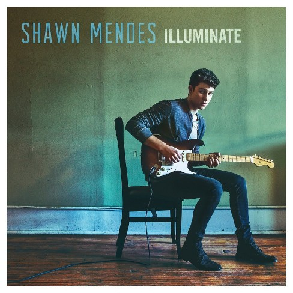
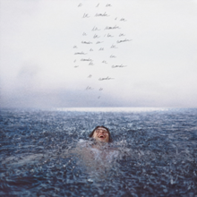

Shawn Peter Raul Mendes |
| Datum rođenja |
|---|
| 08.kolovoz.1998 |
| Država |
|---|
| Kanada |
| Godina | Album |
|---|---|
| 2013-2015. | Handwritten |
| 2016-2017. | Illuminate |
| 2018-2019. | Shawn Mendes |
| 2020-2021. | Wonder |
Shawn Mendes is a Canadian singer and songwriter. He gained a following in 2013, posting song covers on the video-sharing application Vine.
The following year, he caught the attention of artist manager Andrew Gertler and Island Records A&R Ziggy Chareton, which led to him signing a deal with the record label. He has since released three studio albums, headlined three world tours, and received several awards.
Mendes learned to play guitar by watching YouTube tutorial videos at the age of 14 in 2012.Less than a year later he started posting cover videos on YouTube. Mendes started attracting viewers after he posted a cover from Justin Bieber's "As Long as You Love Me" on the social video app Vine in 2013 and got 10,000 likes and as many followers the next day. A
Artist manager Andrew Gertler discovered Mendes online in November 2013, bringing him to Island Records in January 2014.
He released his first single "Life of the Party" on June 26, 2014
Since 2014. he released 3 albums: Handwritten, Illuminate and SM3.
Mendes released his self-titled debut EP (2014) and his debut studio album Handwritten (2015), whose single "Stitches" reached number one in the United Kingdom and the top 10 in the United States and Canada.
He then released his second studio album Illuminate (2016), whose singles "Treat You Better" and "There's Nothing Holdin' Me Back" reached the top 10 in several countries.
His self-titled third studio album (2018) was supported by the lead single "In My Blood". All three albums debuted atop the US Billboard 200, with the first one making Mendes one of five artists ever to debut at number one before the age of 18 and the third one making him the third-youngest artist to achieve three number one albums.
In 2017, Mendes became the first artist to land three number-one singles on the Billboard Adult Contemporary chart before turning 20 years old.
In 2018, he became the first artist to achieve four number-one singles on the Adult Pop Songs chart before the age of 20 as well. In 2019, he released the hit singles "If I Can't Have You" and "Señorita", with the latter peaking at number one on the US Billboard Hot 100.
|  |
Among his accolades, Mendes has won 13 SOCAN awards, 10 MTV Europe Music Awards, eight Juno Awards, eight iHeartRadio MMVAs, two American Music Awards, and received three Grammy Award nominations.
In 2018, Time named Mendes as one of the 100 most influential people in the world on their annual list.
Mendes has mainly been described as a pop and folk-pop singer. Mendes has cited John Mayer, Ed Sheeran, Justin Timberlake, and Bruno Mars as his main musical influences.
Growing up, Mendes listened to reggae music, Led Zeppelin, Garth Brooks, and country music thanks to his parents. He expressed that his second studio album was influenced by Mayer's work while his third album was inspired by Timberlake, Kings of Leon, Kanye West, and Daniel Caesar.
For Brittany Spanos of Rolling Stone, Mendes incorporates "catchy acoustic folk-pop tunes" in his catalogue, while for Joe Coscarelli of The New York Times, "his soft, sometimes soulful pop-rock plays primarily to tweens and teenagers, but has also found traction on adult contemporary radio stations".
In an interview with Clash magazine, Mendes stated:
|
|---|
|  |
In August 2019, Mendes announced the launch of the Shawn Mendes Foundation, with the aim to "inspire and empower his fans and today's youth to bring about positive change in the world and advocate for issues they care most about. On 8 January 2020, Mendes announced that both he and his Shawn Mendes Foundation will be donating an undisclosed sum of money to causes including Australia's Red Cross, the New South Wales Rural Fire Service, and South Australia Country Fire Service, to help ease the strain on those impacted by the devastating fires that are tearing through parts of the country. On September 30, 2020, Mendes announced that his upcoming album, Wonder, is set to be released on December 4, along with announcing that the album's lead single, also called "Wonder", would be released on October 2. Through promotional videos, "Intro", the first song from the album, was also released. "Wonder" debuted at number 18 on the US Billboard Hot 100. On October 13, Mendes announced that a documentary titled In Wonder, which will chronicle the past few years of Mendes' life, would be released on Netflix on November 23. |
|---|